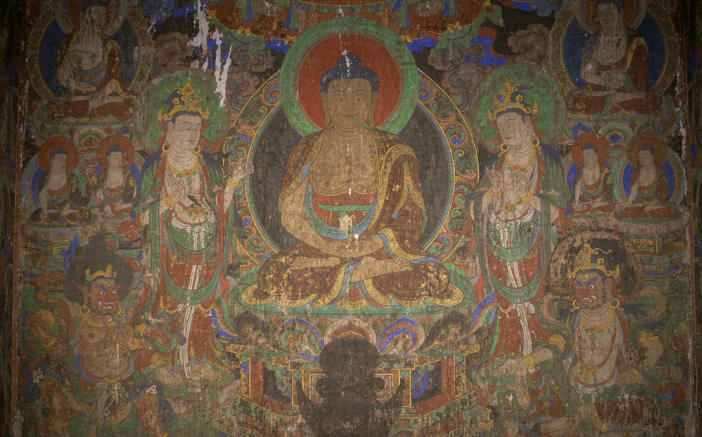
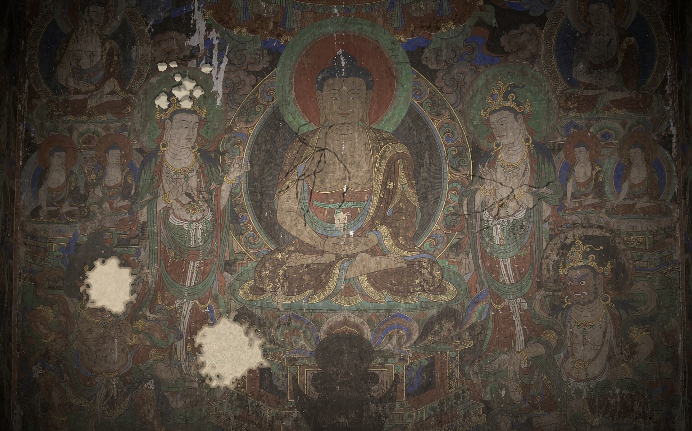
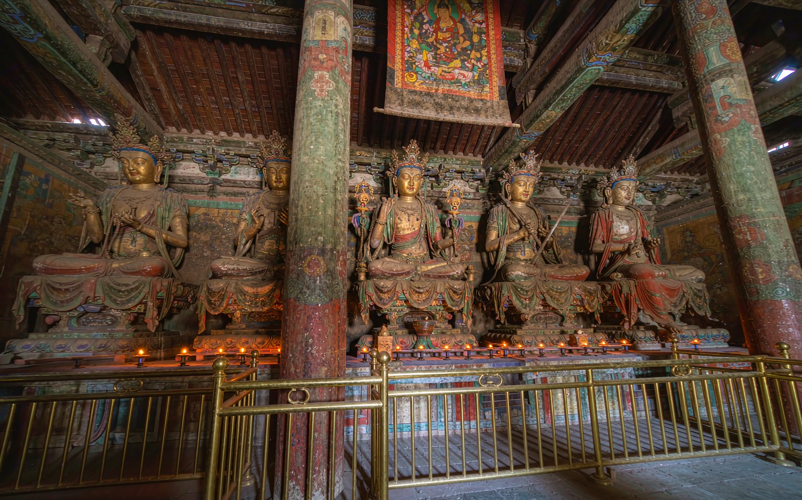

等待取像
德格都苏莫殿 · 叙事库
先选一个人
六个人在墙上等了很久。
他们不记得自己的名字，只记得颜色。
画师
德格都苏莫
—
壹 · 采 集
殿内光线极暗，颜料层已进入衰退期。所有工序在脚手架上完成，扫描设备与壁画保持 60 厘米以上距离， 不使用贴附、喷涂、加热与任何接触式光源，取得的是可归档的原始数据，而不是一张好看的图片。

贰 · 全 壁
拖动查看全壁 · 点击光点取像 · 双击放大
叁 · 修 复
修复不是把画变新，是让它停止坏下去。六处病灶排成台账，给出位置、面积与处置方案； 施术之后，光圈里就是这面墙的另一种可能——不是承诺，是有依据的推演。

肆 · 取 像
壁画是一整面墙，但人是可以分开的。我们以图像志为线索，沿人物的轮廓做语义分割， 修整边缘、补全残损、建立透明通道，让每一位尊像与供养人从墙面中独立出来， 成为可检索、可对读、可讲述的数字档案。
取像结果同时服务于保护与展示：保护端用于病害比对与修复参照，展示端用于叙事与再创作。
伍 · 叙 事
图像是证据，故事是回声。取像完成之后，我们为每个人物写一则短故事—— 可以站在画师的脚手架上看，也可以跪在香客的蒲团上看，或者干脆做一阵穿过殿堂的风。
德格都苏莫殿 · 叙事库
六个人在墙上等了很久。
他们不记得自己的名字，只记得颜色。
陆 · 彩 塑
六身彩塑高 1.2 至 1.6 米，泥胎彩绘，部分手指与飘带已残。采用站式激光扫描， 46 站、4.6 亿点，构建 1:1 三维模型，可量测、可剖切、可虚拟补配。

柒 · 虚 境
以点云为骨、正射影像为皮，重建殿内光环境。四章，十二分钟， 从门槛上的一线光，走到墙根的一粒沙。
附 · 交 付
数字化的价值不在硬盘里，而在十年后仍能被调用。
D-01
—
—